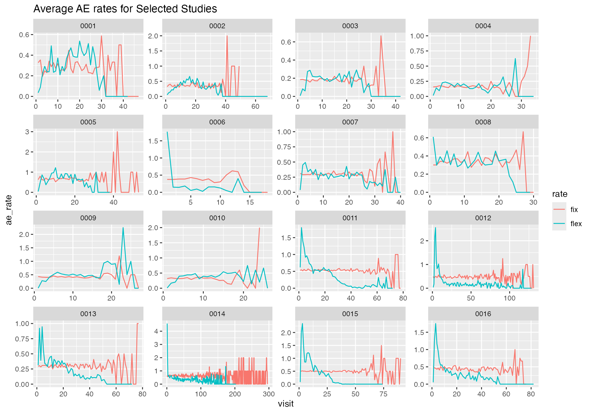
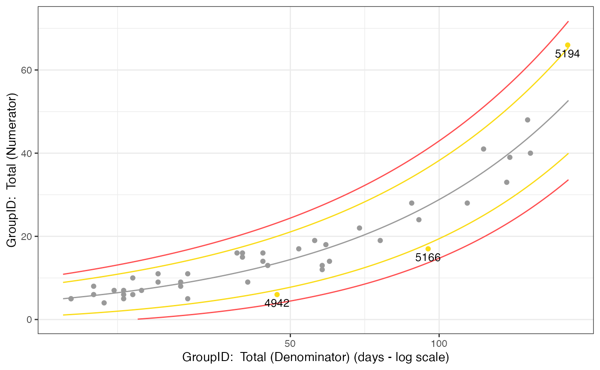
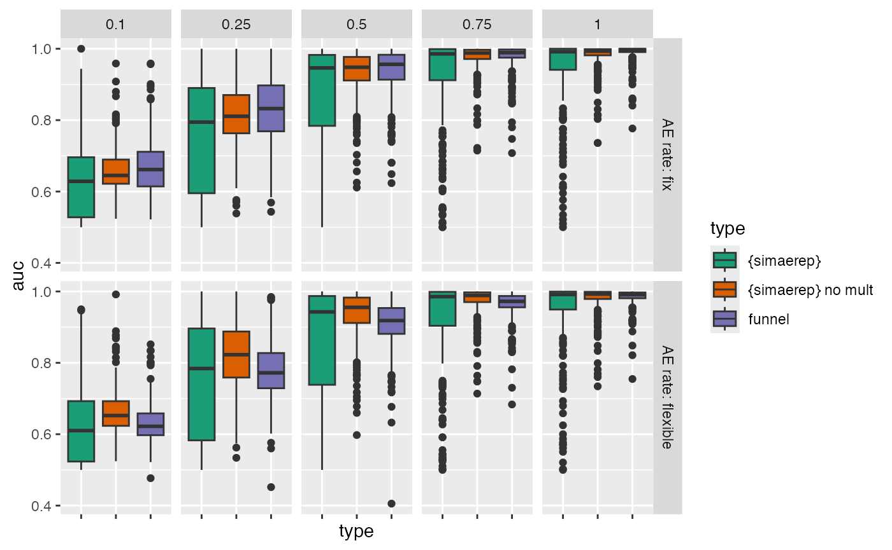

Install {gsm}
devtools::install_github("Gilead-BioStats/gsm@v1.9.2", ref = "main")Introduction
The {gsm} R package provides a standardized Risk Based Quality Monitoring (RBQM) framework for clinical trials that pairs a flexible data pipeline with robust reports. It also uses Funnel Plots to flag outliers which provide broader tolerance limits for sites with low exposure and narrower limits for sites with higher exposure. This method is different to the event rate based limits we have used in previous heuristics to measure {simaerep} performance. Funnel plots are discussed in greater detail by Zink et al. 2018
One of the draw backs of using funnel plots for flagging is that they assume that the AE rate remains constant over the course of the study.
Prepare Data
Load Portfolio Configurations
We have prepared a snapshot of the AE reporting configuration of our current portfolio. For each study we have also measured a visit-specific AE rate which allows us to generate a synthetic portfolio with flexible AE rates across a study.
df_config <- readr::read_csv("ae_conf_20240220.csv")
df_ae_rates <- readr::read_csv("ae_rates_20240220.csv")
df_config %>%
head(25) %>%
knitr::kable()| study_id | ae_per_visit_mean | site_number | max_visit_sd | max_visit_mean | n_pat |
|---|---|---|---|---|---|
| 0001 | 0.2973806 | 4746 | 3.5355339 | 16.50000 | 2 |
| 0001 | 0.2973806 | 4747 | 0.7071068 | 27.50000 | 2 |
| 0001 | 0.2973806 | 4750 | 0.5000000 | 19.25000 | 4 |
| 0001 | 0.2973806 | 4815 | 8.3765546 | 22.16667 | 6 |
| 0001 | 0.2973806 | 4816 | 0.0000000 | 27.00000 | 1 |
| 0001 | 0.2973806 | 4817 | 0.0000000 | 31.00000 | 1 |
| 0001 | 0.2973806 | 4818 | 0.0000000 | 30.00000 | 1 |
| 0001 | 0.2973806 | 4891 | 2.3804761 | 22.00000 | 7 |
| 0001 | 0.2973806 | 4893 | 0.0000000 | 20.00000 | 2 |
| 0001 | 0.2973806 | 4932 | 1.0954451 | 26.80000 | 5 |
| 0001 | 0.2973806 | 4941 | 1.7320508 | 27.00000 | 3 |
| 0001 | 0.2973806 | 4942 | 1.4142136 | 25.00000 | 2 |
| 0001 | 0.2973806 | 4943 | 0.0000000 | 25.00000 | 1 |
| 0001 | 0.2973806 | 4966 | 0.0000000 | 18.00000 | 1 |
| 0001 | 0.2973806 | 4967 | 0.8164966 | 18.00000 | 4 |
| 0001 | 0.2973806 | 4968 | 0.0000000 | 24.00000 | 1 |
| 0001 | 0.2973806 | 4969 | 1.5275252 | 21.33333 | 3 |
| 0001 | 0.2973806 | 4984 | 1.7078251 | 30.75000 | 4 |
| 0001 | 0.2973806 | 4985 | 8.9087972 | 21.16667 | 6 |
| 0001 | 0.2973806 | 4986 | 0.5773503 | 20.33333 | 3 |
| 0001 | 0.2973806 | 4988 | 1.4142136 | 19.00000 | 2 |
| 0001 | 0.2973806 | 5079 | 2.1602469 | 23.00000 | 4 |
| 0001 | 0.2973806 | 5080 | 0.0000000 | 23.00000 | 1 |
| 0001 | 0.2973806 | 5081 | 0.0000000 | 23.00000 | 1 |
| 0001 | 0.2973806 | 5082 | 1.4142136 | 22.00000 | 2 |
| study_id | cum_visit | ae_rate | n_pat |
|---|---|---|---|
| 0001 | 1 | 0.017699 | 113 |
| 0001 | 2 | 0.088496 | 113 |
| 0001 | 3 | 0.230088 | 113 |
| 0001 | 4 | 0.223214 | 112 |
| 0001 | 5 | 0.187500 | 112 |
| 0001 | 6 | 0.196429 | 112 |
| 0001 | 7 | 0.396396 | 111 |
| 0001 | 8 | 0.207207 | 111 |
| 0001 | 9 | 0.216216 | 111 |
| 0001 | 10 | 0.315315 | 111 |
| 0001 | 11 | 0.263636 | 110 |
| 0001 | 12 | 0.318182 | 110 |
| 0001 | 13 | 0.345455 | 110 |
| 0001 | 14 | 0.379630 | 108 |
| 0001 | 15 | 0.401869 | 107 |
| 0001 | 16 | 0.485981 | 107 |
| 0001 | 17 | 0.383178 | 107 |
| 0001 | 18 | 0.396226 | 106 |
| 0001 | 19 | 0.370000 | 100 |
| 0001 | 20 | 0.439560 | 91 |
| 0001 | 21 | 0.369863 | 73 |
| 0001 | 22 | 0.370968 | 62 |
| 0001 | 23 | 0.345455 | 55 |
| 0001 | 24 | 0.446809 | 47 |
| 0001 | 25 | 0.292683 | 41 |
Simulate Portfolio
We generate two synthetic portfolios with no AE under-reporting sites. One portfolio with a fixed AE rate for all visits and another one with a flexible visit-specific AE rate.
df_portf_fix <- sim_test_data_portfolio(df_config, parallel = TRUE, progress = TRUE)
df_portf_fix %>%
head(25) %>%
knitr::kable()| study_id | ae_per_visit_mean | site_number | max_visit_sd | max_visit_mean | patnum | visit | n_ae |
|---|---|---|---|---|---|---|---|
| 0001 | 0.2973806 | 4746 | 3.535534 | 16.5 | 0001 | 1 | 1 |
| 0001 | 0.2973806 | 4746 | 3.535534 | 16.5 | 0001 | 2 | 1 |
| 0001 | 0.2973806 | 4746 | 3.535534 | 16.5 | 0001 | 3 | 2 |
| 0001 | 0.2973806 | 4746 | 3.535534 | 16.5 | 0001 | 4 | 3 |
| 0001 | 0.2973806 | 4746 | 3.535534 | 16.5 | 0001 | 5 | 4 |
| 0001 | 0.2973806 | 4746 | 3.535534 | 16.5 | 0001 | 6 | 4 |
| 0001 | 0.2973806 | 4746 | 3.535534 | 16.5 | 0001 | 7 | 5 |
| 0001 | 0.2973806 | 4746 | 3.535534 | 16.5 | 0001 | 8 | 5 |
| 0001 | 0.2973806 | 4746 | 3.535534 | 16.5 | 0001 | 9 | 5 |
| 0001 | 0.2973806 | 4746 | 3.535534 | 16.5 | 0001 | 10 | 5 |
| 0001 | 0.2973806 | 4746 | 3.535534 | 16.5 | 0001 | 11 | 5 |
| 0001 | 0.2973806 | 4746 | 3.535534 | 16.5 | 0001 | 12 | 5 |
| 0001 | 0.2973806 | 4746 | 3.535534 | 16.5 | 0001 | 13 | 5 |
| 0001 | 0.2973806 | 4746 | 3.535534 | 16.5 | 0001 | 14 | 5 |
| 0001 | 0.2973806 | 4746 | 3.535534 | 16.5 | 0001 | 15 | 5 |
| 0001 | 0.2973806 | 4746 | 3.535534 | 16.5 | 0001 | 16 | 5 |
| 0001 | 0.2973806 | 4746 | 3.535534 | 16.5 | 0002 | 1 | 1 |
| 0001 | 0.2973806 | 4746 | 3.535534 | 16.5 | 0002 | 2 | 1 |
| 0001 | 0.2973806 | 4746 | 3.535534 | 16.5 | 0002 | 3 | 1 |
| 0001 | 0.2973806 | 4746 | 3.535534 | 16.5 | 0002 | 4 | 1 |
| 0001 | 0.2973806 | 4746 | 3.535534 | 16.5 | 0002 | 5 | 1 |
| 0001 | 0.2973806 | 4746 | 3.535534 | 16.5 | 0002 | 6 | 1 |
| 0001 | 0.2973806 | 4746 | 3.535534 | 16.5 | 0002 | 7 | 2 |
| 0001 | 0.2973806 | 4746 | 3.535534 | 16.5 | 0002 | 8 | 2 |
| 0001 | 0.2973806 | 4746 | 3.535534 | 16.5 | 0002 | 9 | 3 |
df_portf_flex <- sim_test_data_portfolio(df_config, df_ae_rates = df_ae_rates, parallel = TRUE, progress = TRUE)Compare AE rates
Next we confirm the different AE rates in our two synthetic portfolios.
df_rate_fix <- df_portf_fix %>%
mutate(ae_rate = coalesce(n_ae - lag(n_ae), n_ae), .by = c("study_id", "patnum")) %>%
summarise(ae_rate = mean(ae_rate), .by = c("study_id", "visit")) %>%
mutate(rate = "fix")
df_rate_flex <- df_portf_flex %>%
mutate(ae_rate = coalesce(n_ae - lag(n_ae), n_ae), .by = c("study_id", "patnum")) %>%
summarise(ae_rate = mean(ae_rate), .by = c("study_id", "visit")) %>%
mutate(rate = "flex")
bind_rows(df_rate_flex, df_rate_fix) %>%
ggplot(aes(visit, ae_rate)) +
geom_line(aes(group = study_id), alpha = 0.2) +
geom_smooth() +
facet_wrap(~ rate) +
labs(title = "Average AE rates per Study")
bind_rows(df_rate_flex, df_rate_fix) %>%
filter(dense_rank(study_id) <= 16) %>%
ggplot(aes(visit, ae_rate)) +
geom_line(aes(group = rate, color = rate)) +
facet_wrap(~ study_id, scales = "free") +
labs(title = "Average AE rates for Selected Studies")
We can confirm that the AE rates in the “flexible” portfolio are not constant. Moreover we see that the AE rate profile is very unique for each study.
Funnel Plots {gsm}
Example
Here we demonstrate how to use the {gsm} package on our simulated portfolios so that we can get a good visualization of the funnel plot.
get_SUBJ <- function(df_portf) {
df_portf %>%
select(study_id, siteid = site_number, subjid = patnum, timeonstudy = visit) %>%
summarise(timeonstudy = max(timeonstudy), .by = c(study_id, siteid, subjid)) %>%
group_by(study_id) %>%
nest()
}
get_AE <- function(df_portf) {
df_portf %>%
select(study_id, subjid = patnum, n_ae) %>%
summarise(n_ae = max(n_ae), .by = c(study_id, subjid)) %>%
filter(n_ae > 0) %>%
mutate(n_ae = map(n_ae, ~ tibble(n = seq(1, .)), .progress = TRUE)) %>%
unnest(n_ae) %>%
select(- n) %>%
group_by(study_id) %>%
nest()
}
dfSUBJ_fix <- get_SUBJ(df_portf_fix)
dfAE_fix <- get_AE(df_portf_fix)
dfInput <- gsm::AE_Map_Raw(list(dfSUBJ = dfSUBJ_fix$data[[1]], dfAE = dfAE_fix$data[[1]]))
dfInput## # A tibble: 113 × 5
## SubjectID SiteID Exposure Count Rate
## <chr> <chr> <int> <int> <dbl>
## 1 0001 4746 16 5 0.312
## 2 0002 4746 14 3 0.214
## 3 0003 4747 26 6 0.231
## 4 0004 4747 26 11 0.423
## 5 0005 4750 19 5 0.263
## 6 0006 4750 19 5 0.263
## 7 0007 4750 20 6 0.3
## 8 0008 4750 18 3 0.167
## 9 0009 4815 25 3 0.12
## 10 0010 4815 28 8 0.286
## # ℹ 103 more rows
dfTransformed <- gsm::Transform_Rate(
dfInput,
strNumeratorCol = "Count",
strDenominatorCol = "Exposure"
)
dfTransformed## # A tibble: 44 × 4
## GroupID Numerator Denominator Metric
## <chr> <int> <int> <dbl>
## 1 4746 8 30 0.267
## 2 4747 17 52 0.327
## 3 4750 19 76 0.25
## 4 4815 40 153 0.261
## 5 4816 9 27 0.333
## 6 4817 5 31 0.161
## 7 4818 9 30 0.3
## 8 4891 48 151 0.318
## 9 4893 15 40 0.375
## 10 4932 33 137 0.241
## # ℹ 34 more rows
dfAnalyzed <- gsm::Analyze_NormalApprox(dfTransformed)
dfAnalyzed## # A tibble: 44 × 7
## GroupID Numerator Denominator Metric OverallMetric Factor Score
## <chr> <int> <int> <dbl> <dbl> <dbl> <dbl>
## 1 4942 6 47 0.128 0.288 1.08 -2.34
## 2 5166 17 95 0.179 0.288 1.08 -2.27
## 3 4817 5 31 0.161 0.288 1.08 -1.51
## 4 5229 12 58 0.207 0.288 1.08 -1.32
## 5 4932 33 137 0.241 0.288 1.08 -1.18
## 6 4986 13 58 0.224 0.288 1.08 -1.04
## 7 4985 28 114 0.246 0.288 1.08 -0.972
## 8 5084 4 21 0.190 0.288 1.08 -0.954
## 9 5082 9 41 0.220 0.288 1.08 -0.938
## 10 4969 14 60 0.233 0.288 1.08 -0.907
## # ℹ 34 more rows
dfFlagged <- gsm::Flag_NormalApprox(dfAnalyzed, vThreshold = c(-3, -2, 2, 3))
dfFlagged## # A tibble: 44 × 8
## GroupID Numerator Denominator Metric OverallMetric Factor Score Flag
## <chr> <int> <int> <dbl> <dbl> <dbl> <dbl> <dbl>
## 1 5194 66 182 0.363 0.288 1.08 2.13 1
## 2 4942 6 47 0.128 0.288 1.08 -2.34 -1
## 3 5166 17 95 0.179 0.288 1.08 -2.27 -1
## 4 4817 5 31 0.161 0.288 1.08 -1.51 0
## 5 5229 12 58 0.207 0.288 1.08 -1.32 0
## 6 4932 33 137 0.241 0.288 1.08 -1.18 0
## 7 4986 13 58 0.224 0.288 1.08 -1.04 0
## 8 4985 28 114 0.246 0.288 1.08 -0.972 0
## 9 5084 4 21 0.190 0.288 1.08 -0.954 0
## 10 5082 9 41 0.220 0.288 1.08 -0.938 0
## # ℹ 34 more rows
dfSummary <- gsm::Summarize(dfFlagged)
dfSummary## # A tibble: 44 × 6
## GroupID Numerator Denominator Metric Score Flag
## <chr> <int> <int> <dbl> <dbl> <dbl>
## 1 5194 66 182 0.363 2.13 1
## 2 5166 17 95 0.179 -2.27 -1
## 3 4942 6 47 0.128 -2.34 -1
## 4 4968 10 24 0.417 1.34 0
## 5 4988 16 39 0.410 1.62 0
## 6 5168 11 27 0.407 1.31 0
## 7 5311 8 20 0.4 1.06 0
## 8 5273 16 40 0.4 1.50 0
## 9 4893 15 40 0.375 1.16 0
## 10 5083 16 44 0.364 1.06 0
## # ℹ 34 more rows
dfBounds <- gsm::Analyze_NormalApprox_PredictBounds(dfTransformed, vThreshold = c(-3, -2, 2, 3))
dfBounds## # A tibble: 1,254 × 5
## Threshold Denominator LogDenominator Numerator Metric
## <dbl> <dbl> <dbl> <dbl> <dbl>
## 1 -3 24.6 3.20 0.0927 0.00377
## 2 -3 25.2 3.23 0.189 0.00750
## 3 -3 25.9 3.25 0.287 0.0111
## 4 -3 26.5 3.28 0.386 0.0145
## 5 -3 27.2 3.30 0.485 0.0179
## 6 -3 27.8 3.33 0.586 0.0211
## 7 -3 28.5 3.35 0.688 0.0242
## 8 -3 29.2 3.37 0.792 0.0272
## 9 -3 29.8 3.39 0.895 0.0300
## 10 -3 30.5 3.42 1.00 0.0328
## # ℹ 1,244 more rows
chart <- gsm::Visualize_Scatter(dfFlagged, dfBounds)
chart
UR Funnel
We write out own funnel function as adapted from {gsm}
funnel_ur <- function(df, site, ur_rate) {
df %>%
filter(visit == max(visit), .by = patnum) %>%
summarise(
Metric = sum(.data$n_ae) / sum(.data$visit),
n_ae = sum(n_ae),
visit = sum(visit),
.by = "site_number"
) %>%
mutate(
n_ae = ifelse(site_number == site, n_ae * (1 - ur_rate), n_ae),
Metric = n_ae / visit
) %>%
mutate(
vMu = sum(.data$n_ae) / sum(.data$visit),
z_0 = ifelse(.data$vMu == 0,
0,
(.data$Metric - .data$vMu) /
sqrt(.data$vMu / .data$visit)
),
phi = mean(.data$z_0^2),
z_i = ifelse(.data$vMu == 0 | .data$phi == 0,
0,
(.data$Metric - .data$vMu) /
sqrt(.data$phi * .data$vMu / .data$visit)
)
) %>%
filter(site_number == site) %>%
pull(z_i)
}
sim_ur_funnel <- function(df) {
df %>%
group_by(study_id) %>%
nest() %>%
ungroup() %>%
mutate(
sites = map(data, ~ distinct(., site_number))
) %>%
unnest(sites) %>%
mutate(ur = list(tibble(ur_rate = c(0, 0.1, 0.25, 0.5, 0.75, 1)))) %>%
unnest(ur) %>%
mutate(
score = pmap_dbl(list(data, site_number, ur_rate), funnel_ur, .progress = TRUE)
)
}
df_sim_ur_funnel_flex <- sim_ur_funnel(df_portf_flex)
df_sim_ur_funnel_fix <- sim_ur_funnel(df_portf_fix)UR {simaerep}
We simulate under-reporting for both portfolios using {simaerep}
using sim_ur_scenarios().
df_sim_simaerep_fix <- sim_ur_scenarios(
df_portf_fix,
extra_ur_sites = 0,
ur_rate = c(0, 0.1, 0.25, 0.5, 0.75, 1),
parallel = TRUE,
poisson = TRUE,
prob_lower = TRUE,
progress = TRUE
)
df_sim_simaerep_flex <- sim_ur_scenarios(
df_portf_flex,
extra_ur_sites = 0,
ur_rate = c(0, 0.1, 0.25, 0.5, 0.75, 1),
parallel = TRUE,
poisson = TRUE,
prob_lower = TRUE,
progress = TRUE
)Evaluate
Combine Results
As the funnel plot score does not use multiplicity correction, we also compare the funnel plot score against the {simaerep} score w/o multiplicity correction.
df_sim_simaerep_fix$ae_rate <- "AE rate: fix"
df_sim_simaerep_flex$ae_rate <- "AE rate: flexible"
df_sim_ur_funnel_fix$ae_rate <- "AE rate: fix"
df_sim_ur_funnel_flex$ae_rate <- "AE rate: flexible"
df_sim_fun_thresh2 <- bind_rows(df_sim_ur_funnel_fix, df_sim_ur_funnel_flex) %>%
mutate(
type = "funnel",
) %>%
select(type, ae_rate, study_id, site_number, ur_rate, score)
df_sim_simaerep_threshp95 <- bind_rows(df_sim_simaerep_fix, df_sim_simaerep_flex) %>%
mutate(
type = "{simaerep}"
) %>%
select(type, ae_rate, study_id, site_number, ur_rate, score = prob_low_prob_ur)
df_sim_simaerep_threshp95_no_mult <- bind_rows(df_sim_simaerep_fix, df_sim_simaerep_flex) %>%
mutate(
type = "{simaerep} no mult"
) %>%
mutate(
score = 1 - prob_low
) %>%
select(type, ae_rate, study_id, site_number, ur_rate, score)
df_eval <- bind_rows(
df_sim_simaerep_threshp95,
df_sim_simaerep_threshp95_no_mult,
df_sim_fun_thresh2
)AUC
We continue by comparing the ROC-AUC.
get_roc <- function(df_ur, df_nr) {
df <- bind_rows(df_ur, df_nr)
pROC::roc(df, response = "is_ur", predictor = "score", quiet = TRUE)
}
# use 0 scenario to mix with ur scenario and calculate auc from scores
df_nr <- df_eval %>%
filter(ur_rate == 0) %>%
mutate(is_ur = "no") %>%
select(- ur_rate) %>%
group_by(type, study_id, ae_rate) %>%
nest() %>%
ungroup() %>%
rename(data_nr = data)
df_ur <- df_eval %>%
filter(ur_rate > 0) %>%
mutate(is_ur = "yes") %>%
group_by(type, study_id, ur_rate, ae_rate) %>%
nest() %>%
ungroup() %>%
rename(data_ur = data)
df_auc <- df_ur %>%
left_join(
df_nr,
by = c("type", "study_id", "ae_rate")
) %>%
mutate(
roc = map2(data_ur, data_nr, get_roc, .progress = TRUE),
auc = map_dbl(roc, pROC::auc, .progress = TRUE)
) %>%
select(type, study_id, ur_rate, ae_rate, roc, auc)Table
df_auc %>%
summarise(
sd_auc = sd(.data$auc),
auc = mean(.data$auc),
.by = c(type, ur_rate, ae_rate)
) %>%
knitr::kable(digit = 3)| type | ur_rate | ae_rate | sd_auc | auc |
|---|---|---|---|---|
| {simaerep} | 0.10 | AE rate: fix | 0.108 | 0.630 |
| {simaerep} | 0.25 | AE rate: fix | 0.163 | 0.754 |
| {simaerep} | 0.50 | AE rate: fix | 0.161 | 0.863 |
| {simaerep} | 0.75 | AE rate: fix | 0.130 | 0.920 |
| {simaerep} | 1.00 | AE rate: fix | 0.111 | 0.938 |
| {simaerep} | 0.10 | AE rate: flexible | 0.114 | 0.629 |
| {simaerep} | 0.25 | AE rate: flexible | 0.166 | 0.754 |
| {simaerep} | 0.50 | AE rate: flexible | 0.161 | 0.862 |
| {simaerep} | 0.75 | AE rate: flexible | 0.127 | 0.923 |
| {simaerep} | 1.00 | AE rate: flexible | 0.108 | 0.943 |
| {simaerep} no mult | 0.10 | AE rate: fix | 0.062 | 0.662 |
| {simaerep} no mult | 0.25 | AE rate: fix | 0.090 | 0.814 |
| {simaerep} no mult | 0.50 | AE rate: fix | 0.071 | 0.930 |
| {simaerep} no mult | 0.75 | AE rate: fix | 0.043 | 0.973 |
| {simaerep} no mult | 1.00 | AE rate: fix | 0.040 | 0.980 |
| {simaerep} no mult | 0.10 | AE rate: flexible | 0.068 | 0.666 |
| {simaerep} no mult | 0.25 | AE rate: flexible | 0.096 | 0.819 |
| {simaerep} no mult | 0.50 | AE rate: flexible | 0.074 | 0.932 |
| {simaerep} no mult | 0.75 | AE rate: flexible | 0.047 | 0.972 |
| {simaerep} no mult | 1.00 | AE rate: flexible | 0.043 | 0.978 |
| funnel | 0.10 | AE rate: fix | 0.082 | 0.672 |
| funnel | 0.25 | AE rate: fix | 0.097 | 0.827 |
| funnel | 0.50 | AE rate: fix | 0.069 | 0.937 |
| funnel | 0.75 | AE rate: fix | 0.042 | 0.975 |
| funnel | 1.00 | AE rate: fix | 0.028 | 0.988 |
| funnel | 0.10 | AE rate: flexible | 0.058 | 0.631 |
| funnel | 0.25 | AE rate: flexible | 0.084 | 0.775 |
| funnel | 0.50 | AE rate: flexible | 0.072 | 0.908 |
| funnel | 0.75 | AE rate: flexible | 0.044 | 0.962 |
| funnel | 1.00 | AE rate: flexible | 0.029 | 0.983 |
Plot
df_auc %>%
ggplot(aes(type, auc)) +
geom_boxplot(aes(fill = type)) +
facet_grid(ae_rate ~ ur_rate) +
scale_fill_brewer(palette = "Dark2") +
theme(axis.text.x = element_blank())
Metrics
Thresholds
We set the thresholds for funnel and simaerep w/o multiplicity correction so that we get the same fpr as for simaerep with multiplicity correction and the established threshold of 0.95
thresh_default <- 0.95
target_fpr <- df_eval %>%
filter(ur_rate == 0, type == "{simaerep}") %>%
summarise(fpr = sum(score >= thresh_default) / n()) %>%
pull(fpr)
thresh_no_mult <- df_eval %>%
filter(ur_rate == 0, type == "{simaerep} no mult") %>%
pull(score) %>%
quantile(1 - target_fpr)
thresh_funnel <- df_eval %>%
filter(ur_rate == 0, type == "funnel") %>%
pull(score) %>%
quantile(target_fpr)
target_fpr## [1] 0.0005309081
thresh_no_mult## 99.94691%
## 0.999
thresh_funnel## 0.05309081%
## -2.979981Aggregate
get_prop_test_ci95 <- function(..., ix) {
stopifnot(ix %in% c(1, 2))
tryCatch(
prop.test(...)$conf.int[ix],
error = function(cnd) c(NA, NA)[ix]
)
}
aggr_results <- function(df_eval) {
df_perf <- df_eval %>%
mutate(
is_ur = case_when(
type == "{simaerep}" ~ score >= thresh_default,
type == "{simaerep} no mult" ~ score >= thresh_no_mult,
type == "funnel" ~ score <= thresh_funnel
)
) %>%
summarise(
n = n(),
.by = c(type, ae_rate, ur_rate, is_ur)
) %>%
pivot_wider(
names_from = is_ur,
values_from = n,
names_prefix = "is_ur_",
values_fill = 0
) %>%
mutate(
n_sites = is_ur_TRUE + is_ur_FALSE,
ratio = is_ur_TRUE / n_sites,
ratio_type = ifelse(ur_rate == 0, "fpr", "tpr"),
ci95_low = map2_dbl(is_ur_TRUE, n_sites, ~ get_prop_test_ci95(.x, .y, ix = 1)),
ci95_high = map2_dbl(is_ur_TRUE, n_sites, ~ get_prop_test_ci95(.x, .y, ix = 2))
)
}
df_perf <- aggr_results(df_eval)Table
| type | ae_rate | ur_rate | is_ur_FALSE | is_ur_TRUE | n_sites | ratio | ratio_type | ci95_low | ci95_high |
|---|---|---|---|---|---|---|---|---|---|
| {simaerep} | AE rate: fix | 0.00 | 21651 | 10 | 21661 | 0.0005 | fpr | 0.0002 | 0.0009 |
| {simaerep} | AE rate: fix | 0.10 | 21584 | 77 | 21661 | 0.0036 | tpr | 0.0028 | 0.0045 |
| {simaerep} | AE rate: fix | 0.25 | 20581 | 1080 | 21661 | 0.0499 | tpr | 0.0470 | 0.0529 |
| {simaerep} | AE rate: fix | 0.50 | 15956 | 5705 | 21661 | 0.2634 | tpr | 0.2575 | 0.2693 |
| {simaerep} | AE rate: fix | 0.75 | 11018 | 10643 | 21661 | 0.4913 | tpr | 0.4847 | 0.4980 |
| {simaerep} | AE rate: fix | 1.00 | 8492 | 13169 | 21661 | 0.6080 | tpr | 0.6014 | 0.6145 |
| {simaerep} | AE rate: flexible | 0.00 | 21648 | 13 | 21661 | 0.0006 | fpr | 0.0003 | 0.0011 |
| {simaerep} | AE rate: flexible | 0.10 | 21535 | 126 | 21661 | 0.0058 | tpr | 0.0049 | 0.0069 |
| {simaerep} | AE rate: flexible | 0.25 | 20348 | 1313 | 21661 | 0.0606 | tpr | 0.0575 | 0.0639 |
| {simaerep} | AE rate: flexible | 0.50 | 15435 | 6226 | 21661 | 0.2874 | tpr | 0.2814 | 0.2935 |
| {simaerep} | AE rate: flexible | 0.75 | 10511 | 11150 | 21661 | 0.5148 | tpr | 0.5081 | 0.5214 |
| {simaerep} | AE rate: flexible | 1.00 | 8085 | 13576 | 21661 | 0.6267 | tpr | 0.6203 | 0.6332 |
| {simaerep} no mult | AE rate: fix | 0.00 | 21641 | 20 | 21661 | 0.0009 | fpr | 0.0006 | 0.0015 |
| {simaerep} no mult | AE rate: fix | 0.10 | 21531 | 130 | 21661 | 0.0060 | tpr | 0.0050 | 0.0071 |
| {simaerep} no mult | AE rate: fix | 0.25 | 20255 | 1406 | 21661 | 0.0649 | tpr | 0.0617 | 0.0683 |
| {simaerep} no mult | AE rate: fix | 0.50 | 15130 | 6531 | 21661 | 0.3015 | tpr | 0.2954 | 0.3077 |
| {simaerep} no mult | AE rate: fix | 0.75 | 9923 | 11738 | 21661 | 0.5419 | tpr | 0.5352 | 0.5485 |
| {simaerep} no mult | AE rate: fix | 1.00 | 7471 | 14190 | 21661 | 0.6551 | tpr | 0.6487 | 0.6614 |
| {simaerep} no mult | AE rate: flexible | 0.00 | 21635 | 26 | 21661 | 0.0012 | fpr | 0.0008 | 0.0018 |
| {simaerep} no mult | AE rate: flexible | 0.10 | 21479 | 182 | 21661 | 0.0084 | tpr | 0.0072 | 0.0097 |
| {simaerep} no mult | AE rate: flexible | 0.25 | 20015 | 1646 | 21661 | 0.0760 | tpr | 0.0725 | 0.0796 |
| {simaerep} no mult | AE rate: flexible | 0.50 | 14490 | 7171 | 21661 | 0.3311 | tpr | 0.3248 | 0.3374 |
| {simaerep} no mult | AE rate: flexible | 0.75 | 9488 | 12173 | 21661 | 0.5620 | tpr | 0.5553 | 0.5686 |
| {simaerep} no mult | AE rate: flexible | 1.00 | 7123 | 14538 | 21661 | 0.6712 | tpr | 0.6649 | 0.6774 |
| funnel | AE rate: fix | 0.00 | 21654 | 7 | 21661 | 0.0003 | fpr | 0.0001 | 0.0007 |
| funnel | AE rate: fix | 0.10 | 21561 | 100 | 21661 | 0.0046 | tpr | 0.0038 | 0.0056 |
| funnel | AE rate: fix | 0.25 | 19908 | 1753 | 21661 | 0.0809 | tpr | 0.0773 | 0.0847 |
| funnel | AE rate: fix | 0.50 | 14432 | 7229 | 21661 | 0.3337 | tpr | 0.3275 | 0.3401 |
| funnel | AE rate: fix | 0.75 | 9742 | 11919 | 21661 | 0.5503 | tpr | 0.5436 | 0.5569 |
| funnel | AE rate: fix | 1.00 | 6598 | 15063 | 21661 | 0.6954 | tpr | 0.6892 | 0.7015 |
| funnel | AE rate: flexible | 0.00 | 21645 | 16 | 21661 | 0.0007 | fpr | 0.0004 | 0.0012 |
| funnel | AE rate: flexible | 0.10 | 21592 | 69 | 21661 | 0.0032 | tpr | 0.0025 | 0.0041 |
| funnel | AE rate: flexible | 0.25 | 21076 | 585 | 21661 | 0.0270 | tpr | 0.0249 | 0.0293 |
| funnel | AE rate: flexible | 0.50 | 17908 | 3753 | 21661 | 0.1733 | tpr | 0.1683 | 0.1784 |
| funnel | AE rate: flexible | 0.75 | 13506 | 8155 | 21661 | 0.3765 | tpr | 0.3700 | 0.3830 |
| funnel | AE rate: flexible | 1.00 | 9665 | 11996 | 21661 | 0.5538 | tpr | 0.5472 | 0.5604 |
Plot
plot_perf <- function(df_perf) {
df_perf %>%
mutate(ur_rate = paste0("under-reporting rate: ", ur_rate, " - ", ratio_type),
ur_rate = ifelse(str_detect(ur_rate, "fpr"), "fpr", ur_rate),
ae_rate = forcats::fct_rev(factor(ae_rate))) %>%
group_by(ur_rate) %>%
ggplot(aes(type, ratio)) +
geom_errorbar(aes(ymin = ci95_low, ymax = ci95_high, color = type, linetype = ae_rate), linewidth = 1) +
facet_wrap(~ ur_rate, ncol = 1) +
coord_flip() +
theme(legend.position = "bottom") +
labs(
x = "",
y = "CI95 Performance Ratio",
title = "{simaerep} vs Funnel-Plot Performance"
) +
scale_color_brewer(palette = "Dark2")
}
plot_perf(df_perf)Summary
- Funnel plot expects constant event rates over time. Performance decrease when event rates are flexible.
- {simaerep} performance is unaffected by flexible event rates.
- {simaerep} detection rates with comparable false positive rates are greater than funnel plot detection rates when event rates are flexible.
plan(sequential)